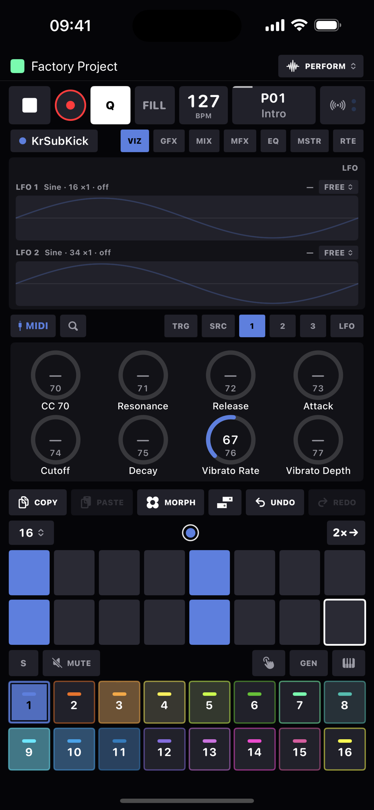
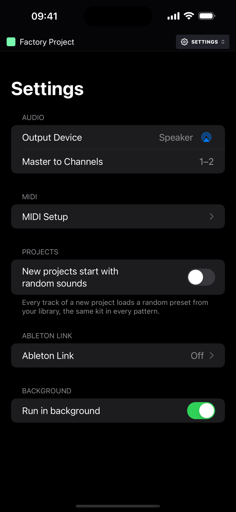

MIDI & Link
HeartBeat sequences hardware as happily as its own devices - per-track outputs, every keyboard and controller connected directly, sample-accurate clock, and a learn mode that can bind nearly everything on screen to a controller.
MIDI learn
Tap the radiowaves button beside the transport (it also houses the in/out activity LEDs - the OUT light means notes and CCs, not clock). The screen outlines every mappable control in cyan: tap one, move a hardware control, done. Controls that already carry a binding wear a cyan dot; long-press a control's outline to clear its binding.
Long-press the learn button to choose what new learns bind to:
| Mode | Meaning |
|---|---|
| 1 · Visible page | 8 knobs follow whatever page is showing - the TRG cells, the current knob page, the LFO rows. With a step latched they write p-locks. |
| 2 · Pinned track | Controls stick to the track selected now, wherever you navigate. |
Modes matter only at learn time - every stored binding stays live simultaneously, and one hardware control can carry one binding per mode.
- What's learnable: transport (play/stop, record, Q, FILL, tap tempo), all 16 mutes and track selects, pattern slots, page arrows for both carousels, knobs and device params, morph pads and the crossfader, mixer faders, master volume and returns, compressor/limiter/EQ cells, global FX, all the DJ FX, step condition and retrig sweeps, track defaults, track length, 2×→, undo/redo, and the mode latches (MUTE, KEYS, PLAY, MORPH, mute scopes). There's also an Ignore target to silence noisy controller outputs.
- Buttons vs toggles: after a learn the app probes whether your control sends a release; misdetections are correctable per binding with the MOM/TOG chip in Settings → MIDI Setup → MIDI Learn Bindings.
- Relative encoders (Push-style endless knobs) are supported via imported binding files.
- Bindings import/export: Settings → MIDI Setup → MIDI Learn Bindings → ••• - share a rig as a JSON file; imports merge with incoming bindings winning. Bindings are stored in the project and covered by undo.
Sequencing hardware
- Set a track's Device to MIDI, then in its MIDI Out card pick an Output (any CoreMIDI destination - USB, Bluetooth, network, or a virtual port) and a Channel. An unplugged device stays selectable as "(offline)" and simply resumes when it returns.
- The MIDI device's pages: SRC (CHANNEL, BANK, SUB, PROG setup knobs and BEND, MOD, AT, BREATH performance knobs) plus three pages of 24 assignable CC knobs, each with a name and CC number.
- Audio return: the track sheet's Audio In card picks the interface input the synth comes back on, and a MIX page (gain, pan, chorus, drive, highpass, stereo width, sends) joins the knob pages. See the devices chapter.
- P-locks on a MIDI track are real CC events sent just before the note - and the setup knobs lock too, so a single step can change channel or fire a bank/program change.
- Program changes send in spec order (bank MSB, LSB, program) when you turn the setup knobs and automatically on pattern switches for tracks whose patch differs.
- Send MIDI to track (in Track Setup) layers a second device under the first: everything the track plays also plays the target, and targets can forward on again. See the sequencer chapter.

Getting MIDI in
Every MIDI source the system exposes - USB, Bluetooth, network, other apps' outputs - connects to HeartBeat directly, so a keyboard you plug in just plays, and records onto, the selected track, following its device. No router app needed. Connections follow plug and unplug, and echoes of the app's own recent output are filtered automatically.
Where a note lands works the Elektron way. In Settings → MIDI Setup, Auto Channel is the channel that always plays the selected track: Any (the default) or one channel, and Auto Channel Source narrows that to one input. In the track sheet, every track's MIDI In card gives it an Input Channel (Off by default) and an Input Device (Any, or one source), so a keyboard on channel 5 can play track 5 whatever is selected. A specific auto channel wins on its own channel; then a track whose input channel and device match takes the note; then, with Auto Channel on Any, the selected track does; anything else is ignored. Recording lands on whichever track received the note; the on-screen keys and pads always play the selected track.
- Settings → MIDI Setup → MIDI Input lists every source with its own switch (all on by default, remembered across launches).
- Other apps (HeartBeat In) is the virtual destination other apps and routers send to, with a stable identity across launches. Its switch drops what arrives without unpublishing the port, so saved routes stay valid.
- Network MIDI (RTP) enables the network session; connect from another device's MIDI Network Setup.
- Bluetooth MIDI Devices… opens the system pairing browser; a paired device then appears as an ordinary source and destination.

Clock and transport sync
- Out: 24 PPQN MIDI clock and Start/Continue/Stop, scheduled with exact host timestamps. Settings → MIDI Setup → Sync Out is a grid: a destination per row, a Clock and a Start / Stop checkbox per destination. A destination you have never ticked follows its tracks (clocked while one plays it), and Start / Stop follows the clock choice unless you set it apart - so a synth you sequence gets both without a visit to Settings, a drum machine you only want in sync gets them with a tick, and a device that must not restart can take clock alone.
- In: Settings → MIDI Setup → External Sync - Follow Start / Stop obeys incoming transport bytes; Sync to external clock phase-locks the tempo to an incoming clock, gently, while playing.
Ableton Link
- Enable from Settings → Ableton Link (the standard Link settings sheet: enable, Start Stop Sync, peer count, and audio sharing). Status shows Connected / Enabled / Off.
- Tempo is bidirectional and the quantum is one 4/4 bar - joining a running session drops you in on the next bar line, phase-locked.
- With audio sharing on, HeartBeat announces a Link Audio channel named "Master" that streams the master mix to Link peers - it costs nothing until a peer actually subscribes.
- Stream to Link, in a track's Track In/Out card, announces a channel per track, named after the track - so Ableton Live can take the kick, the bass and the lead on their own channels while the master keeps streaming too.
Settings reference
| Section | Rows |
|---|---|
| Audio | Output Device (system route picker) · Master to Channels on multi-output interfaces. Tracks can also take their own Audio Out pairs in track setup. |
| MIDI Setup | Its own page, four cards. Control Surface: MIDI Learn Bindings · Control Surface picker · Push Pad Feel (Push Default / Light / Lightest / Heavy). MIDI Input: Other apps (HeartBeat In) · one switch per connected source · Network MIDI (RTP) · Bluetooth MIDI Devices… · Auto Channel Source (Any or one input) · Auto Channel (Any or 1 to 16). Sync Out: a grid with a Clock and a Start / Stop checkbox per destination. External Sync: Follow Start / Stop · Sync to external clock. |
| Projects | New projects start with random sounds - every track of a new project loads a random preset (off by default). |
| Ableton Link | The Link settings sheet. |
| Background | Run in background (on by default) - keep playing under the lock screen. |